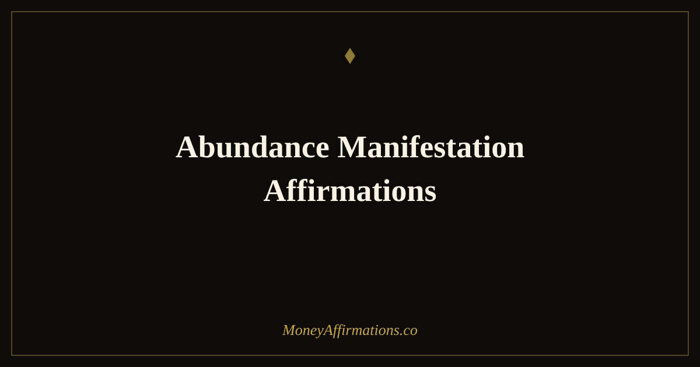

Abundance Manifestation Affirmations: 30 Statements to Attract More

The idea of manifesting abundance has attracted both enthusiastic followers and reasonable sceptics. What the research actually supports is something more nuanced and more useful than either camp typically describes: the way you habitually frame your expectations has a measurable effect on the decisions you make, the risks you take, and the opportunities you notice. These 30 abundance manifestation affirmations are built on that foundation. They are designed to shift the dominant mental posture from closed-and-defended to open-and-expectant — not through wishful thinking, but through the deliberate and repeated installation of beliefs that support receptive, growth-oriented behaviour. Used consistently, they create the internal alignment that makes abundance not just a concept but a lived experience.
What are abundance manifestation affirmations?
Abundance manifestation affirmations are present-tense statements that combine two distinct psychological movements: affirming that abundance is your natural state, and actively aligning your thinking with the expectation of receiving more. They address the beliefs, identities, and assumptions that either support or block financial flow. Where general affirmations might focus on feeling good or reducing anxiety, manifestation affirmations are specifically oriented toward attraction — the idea that your inner state influences what opportunities, relationships, and resources appear in your field of awareness and action.
If you are building a broader practice around this work, the manifestation affirmations collection provides a comprehensive foundation to pair with these statements.
30 abundance manifestation affirmations
- I am open to receiving abundance in forms I have not yet imagined.
- I allow money and opportunity to flow toward me with ease and regularity.
- I am in full alignment with the abundant life I am building for myself.
- I expect good things to happen financially, and I am rarely disappointed.
- I attract resources, relationships, and ideas that support my financial growth.
- I am a clear and open channel for financial abundance to move through.
- I release any resistance I have held toward receiving more than I currently have.
- I am worthy of financial abundance, and I accept it without guilt or hesitation.
- I trust that the universe is consistently working in my financial favour.
- I notice opportunities that align with my goals and I act on them with confidence.
- I am magnetised to wealth, and wealth is magnetised to me.
- I hold a clear vision of my abundant future, and every day I move closer to it.
- I allow prosperity to enter every area of my life simultaneously.
- I am grateful for the abundance that is already present and expectant of the abundance still arriving.
- I receive money graciously and use it in alignment with my deepest values.
- I am at peace with having more than enough, and I use that surplus generously.
- I release old patterns that kept me small, and I step fully into my financial potential.
- I trust my instincts when it comes to financial opportunities, and my instincts are sharp.
- I am consistently attracting new streams of income into my life.
- I feel the flow of abundance in my daily experience, in small ways and large ones.
- I am comfortable receiving large amounts of money and I manage them with wisdom.
- I live in a state of positive financial expectancy that shapes how I show up each day.
- I let go of the need to control every outcome and trust that abundance finds its own way to me.
- I am aligned with the energy of prosperity and I radiate it in everything I do.
- I welcome financial abundance as a natural part of the life I have chosen to create.
- I attract opportunities that are perfectly matched to my skills, my values, and my goals.
- I am expanding my capacity to receive, hold, and grow financial abundance every day.
- I see evidence of abundance everywhere I look, and this reinforces my belief in its availability.
- I trust the process of building wealth, knowing that consistent alignment produces consistent results.
- I am fully ready for the abundant life I am manifesting, and I meet it with open hands.
How to use these affirmations
Manifestation affirmations are most effective when used with deliberate intention rather than mechanical repetition. Choose five to eight statements that feel both true and slightly stretching — the ideal affirmation is one you can almost fully believe but that asks you to expand slightly. Statements that produce strong internal disagreement are not yet ready to be used; work with what is closer to your current experience first.
A good practice structure is to read your chosen affirmations in the morning, then spend two to three minutes visualising what your day would look and feel like if those statements were entirely true right now. This combination of verbal affirmation and mental imagery activates more neural pathways than either technique alone and produces more durable belief change.
Once a week, review whether your behaviour has started to align with the affirmations you are using. Are you taking different actions? Noticing different opportunities? Responding differently to setbacks? This reflection step is what transforms affirmation from a passive exercise into an active instrument of change.
How manifestation affirmations work psychologically
The most useful psychological framework for understanding how manifestation affirmations work is the intention-action loop. Every action you take is preceded by a belief about what is possible, what you deserve, and what is likely to happen. When you consistently hold limiting beliefs — "money is hard to come by," "I am not the kind of person who earns well" — those beliefs direct you away from opportunities and toward defensive, low-risk behaviours. Manifestation affirmations interrupt this loop by installing different prior beliefs.
The mechanism is not magical but it is genuinely powerful. Beliefs shape attention: you notice what you expect to see and filter out what does not fit your current model of reality. A person who believes abundance is available will notice a business opportunity in a conversation that another person filters out entirely. The opportunity was present for both people; the difference was in what each was primed to perceive.
There is also a social dimension. People who carry an abundant internal posture — relaxed confidence, genuine receptivity, generosity of spirit — tend to attract more collaboration, referrals, and professional goodwill than those who project scarcity or anxiety. The "attraction" that manifestation language describes is, in large part, the social and behavioural consequence of genuinely believing that things are going well and will continue to do so. The affirmations work by building and sustaining that posture over time.
Tips to make them work faster
- Combine with evidence-gathering. Each evening, write down one concrete instance of abundance you noticed during the day — a conversation, an idea, a small financial win. This trains your brain to find evidence for what you are affirming.
- Use a visualisation anchor. After saying each affirmation, pause and create a brief mental image of what that statement looks like as lived reality. Even ten seconds of imagery per statement multiplies its psychological impact.
- Say them aloud. Hearing your own voice make a confident statement activates different neural processes than silent reading. Auditory affirmations tend to produce stronger emotional responses, which deepens encoding.
- Act as if. After your morning practice, identify one small action you can take that is consistent with the abundant identity you are affirming. Action is the bridge between belief and outcome.
- Release attachment to how. Manifestation affirmations work best when you hold the what (abundance) firmly and release the how (the specific mechanism). Attachment to a single pathway for abundance can cause you to miss other, sometimes better, routes.
Frequently Asked Questions
What is the difference between abundance affirmations and manifestation affirmations?
Abundance affirmations focus on building a general sense of having enough — they address scarcity beliefs and cultivate contentment alongside growth. Manifestation affirmations are more specifically oriented toward attracting a particular outcome: they work on alignment, expectation, and receptivity to what you are intending to bring into your life. Abundance manifestation affirmations combine both: they affirm that you are already in a state of enough while also holding an open, expectant posture toward more. In practice, this combination is more effective than either approach alone because it avoids both the stagnation of pure contentment and the anxiety of pure striving.
How do I manifest abundance when my current reality feels scarce?
The most effective approach when circumstances feel scarce is to begin with affirmations that are genuinely believable rather than aspirational. Statements about your openness to change, your capacity to learn, or your track record of having navigated difficulty are honest starting points. From there, you can gradually move toward statements about what you are expecting and allowing. The key principle is that affirmations work by shifting your internal state, which then shifts your behaviour and perception. If a statement produces strong internal resistance, it is not yet useful — choose a smaller step that your nervous system can accept.
How long does abundance manifestation take to produce results?
The timeline varies considerably depending on the gap between your current beliefs and the ones you are working to establish, the consistency of your practice, and the concrete actions you take alongside your affirmation work. Most people notice subtle shifts in perception and mood within two to four weeks of daily practice. Tangible external changes — new opportunities, income shifts, financial decisions that feel clearer — often appear within one to three months. Significant structural changes to financial life typically take six months to a year of sustained practice combined with aligned action. Affirmations alone do not produce results; they create the internal conditions that make action more natural and consistent.
These 30 statements are a starting point. As your practice deepens, return to the full manifestation affirmations collection to explore the complete range of tools available for aligning your mindset with the abundant life you are building.